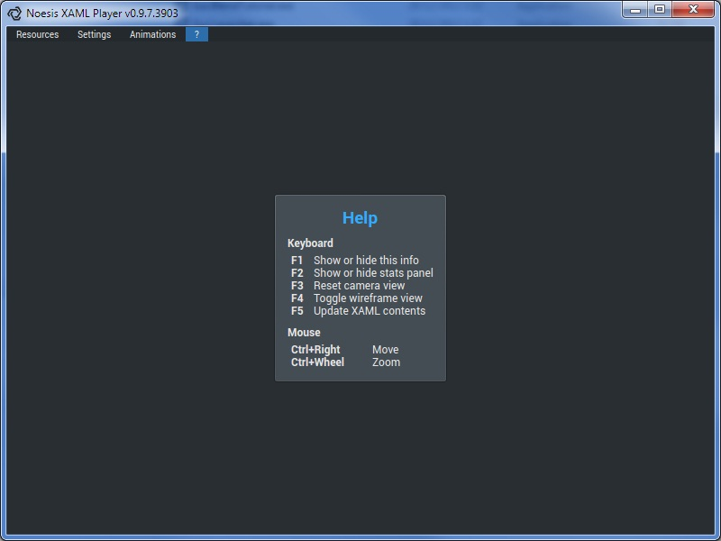
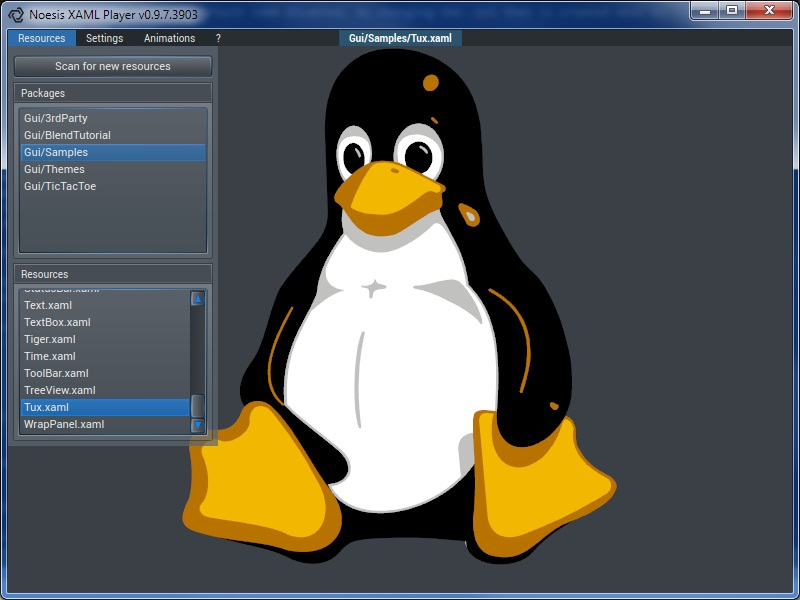

First steps with NoesisGUI
If you are reading this you are probably getting the first contact with NoesisGui. This is a brief tutorial where you will learn how to visualize .xaml files. Having learned that we will create a very simple user interface.
The first step is launching XamlPlayer, whose executable is located in the /Bin folder.
TIP
You can visualize fps and memory stats, that by default come disabled, by changing the .ini that is created next to the executable the first time you execute the player. Note that you should remove the semicolon to activate the line.
[Core.MemoryManager]
TrackMemory = true
[Drawing.VGL]
Fps = true
The resources menu opens a browser that allows choosing the desired .xaml to be displayed. Resources must be located in a data package. Data packages are located in the /Data/Packages/ folder, and their content is always inside the Content/ directory. Let's open the file Data/Packages/Gui/Samples/Content/tux.xaml (the uri for this resource is Gui/Samples/tux.xaml, and you will see reference it that way in the rest of the documents)
We have included several examples inside the Gui/Samples package. It is recommended that you test all of them to get an overview of the different features offered by NoesisGui.
Next step is creating our first user interface. Create a new file in the Data/Packages/Gui/Samples/Content with the content shown below, open the Resources menu, click on "Scan for new resources" and pick the new created file.
<Grid>
<Button Content="Click Me!" Width="120" Height="40"/>
</Grid>
TIP
You don't need to reopen the player each time you make changes to your file. Simply hit F5 and the content will reload.
By default all content visualized by XamlPlayer uses the NoesisStyle theme. This default theme can be changed by using a resource dictionary. More examples of themes can be found in the Gui/Themes package.
<Grid>
<Grid.Resources>
<ResourceDictionary Source="../../../../Gui/Themes/Content/SimpleStyle.xaml"/>
</Grid.Resources>
<Button Content="Click Me!" Width="120" Height="40"/>
</Grid>
Apart from xaml resources you can use fonts to change the aspect of texts. You can find several sample fonts in the Gui/Samples/Fonts/ folder. A font is defined by a .font file that lists all the files associated to that font. If you have extra truetypes for bold weighting or italic style you would have to list them in the .font file. For example, the Let Me Ride.font contains a single .ttf file:
LetMeRide.ttf
Changing the font of any element is very easy. For example, let's change the font of the above button:
<Grid>
<Button Content="Click Me!" Width="120" Height="40" FontFamily="Fonts/#Let Me Ride"/>
</Grid>
And that is all for the first tutorial. Please continue reading the rest of tutorials to learn more things about NoesisGui.